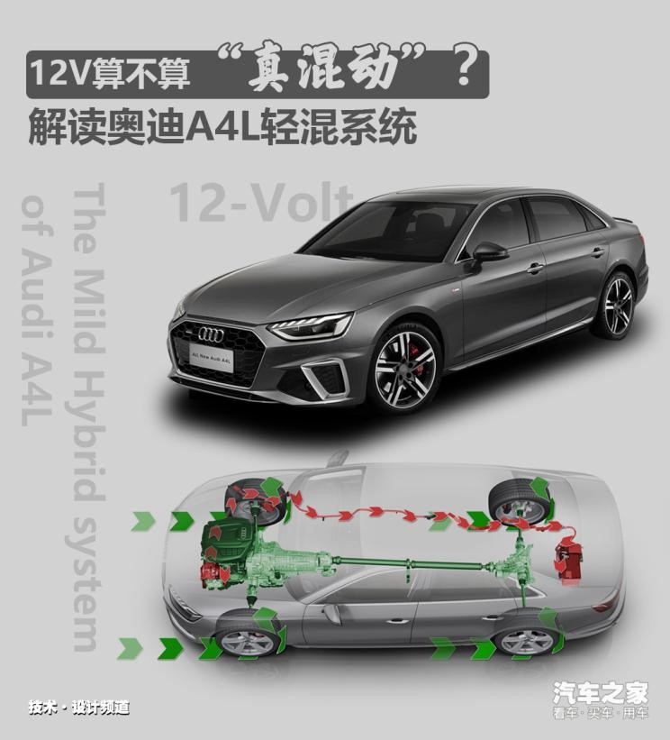
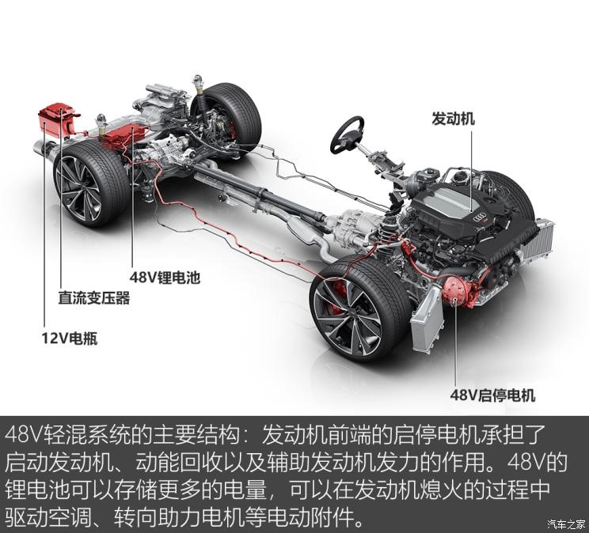
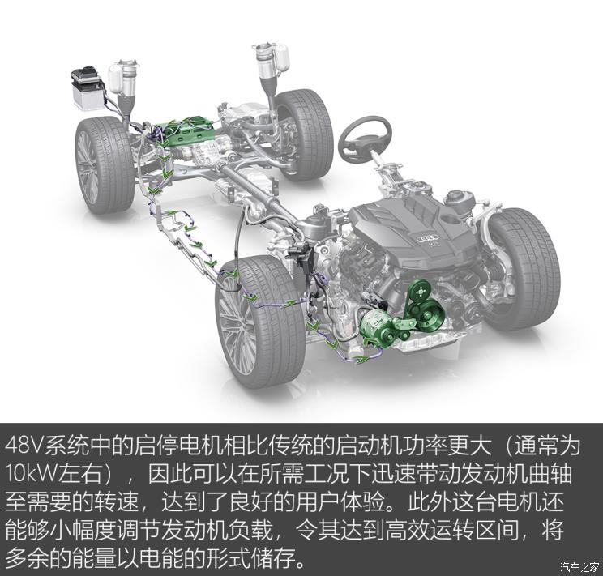
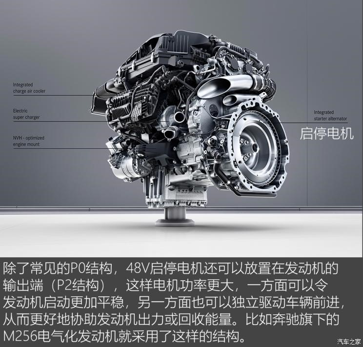
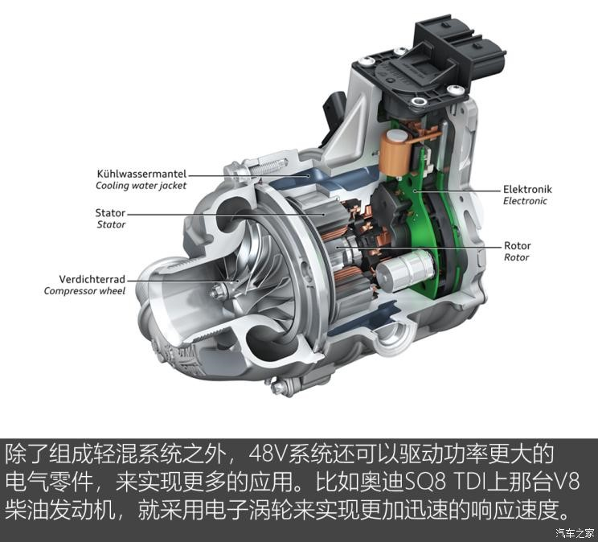
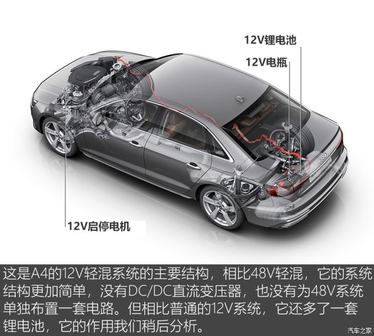
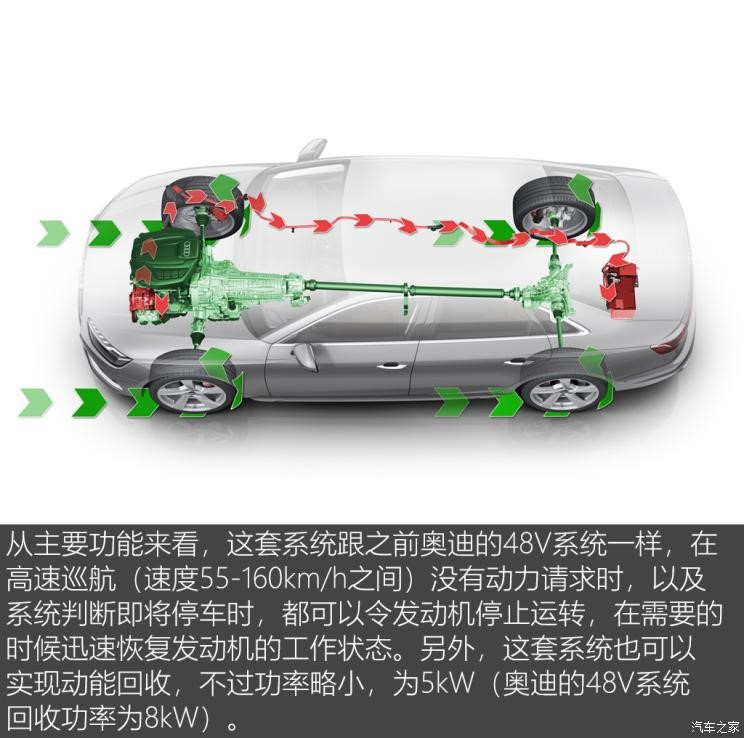
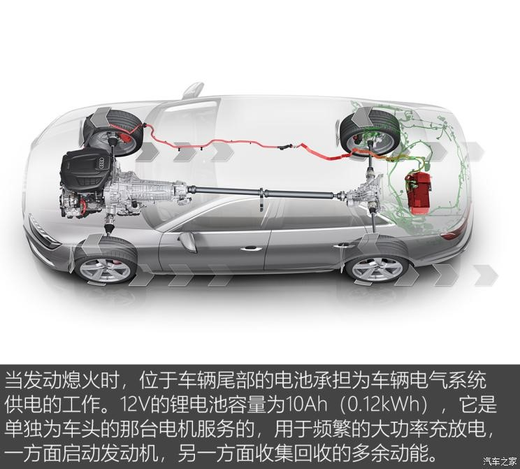
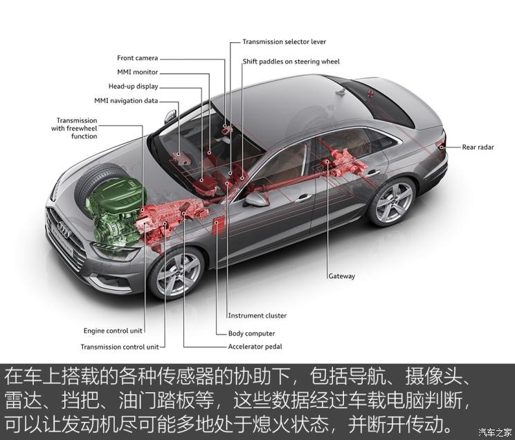
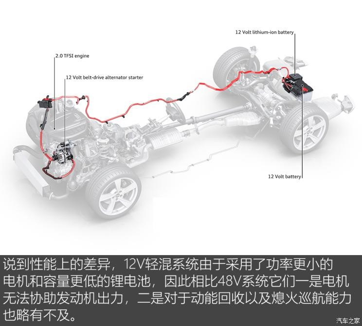

[汽车之家 揭秘新车技术] 随着新款奥迪A4L的上市，更加“凶猛”的外形以及配置的升级，让这台中型豪华车在面对来势汹汹的对手时又增添了几分底气。关于这台车我们已经进行了详细的性能测试（有兴趣的读者请移步这里：要你“好看” 测试新款奥迪A4L 45 TFSI），说到这台车的动力系统，它相比改款前变动最大的地方，在于它增加了一套12V轻混系统。恩？在48V满天飞的今天，A4L用的这套12V轻混也能叫混动吗？下面我们就掰开来聊聊

这篇文章主要聊到：
1、轻混系统是如何让汽车省油的？
2、12V轻混跟48V又有什么区别？
3、不用48V用12V，奥迪这是不思进取搞技术倒退吗？
________________________________________
●48V：未来汽车电气系统的新标准？
说到48V系统，相信大家对它已经不再陌生。为了应对日益严格的节能减排需求，2011年，奥迪、宝马、奔驰、大众、保时捷联合推出了48V系统并推出了相关规范。我们知道，如今汽车主流的电气系统电压为12V，推出48V电气系统的意义在于更高的电压可以支持功率更大的用电零部件，如今48V系统最为普遍的应用就是在发动机前端或者后端集成的大功率启动/发电一体电机（BSG）组成一套轻混系统。这套系统的基本原则就是在汽车不需要发动机动力的时候，让发动机及时“休息”，从而避免不必要的燃油浪费。

相比传统的自动启停系统，48V微混系统可以在更多的工况下令发动机熄火。以奥迪为例，当车速在55-160km/h时松开油门踏板，系统判定车辆处于滑行状态，就可以令发动机熄火同时变速器挂入空挡；而当车辆逐渐减速至停车时，当车速降至22km/h时它也可以令发动机熄火滑行。而电气系统此时可以驱动必须的电气附件，来达到进一步降低油耗的效果。从结构图中可以看到，这台启停发电机位于发动机前端，通过皮带同发动机曲轴相连，这被称为是P0结构的混动系统。



高中物理告诉我们，对于直流电而言，电器的功率为电压和电流的乘积，即P=UI。所以对于相同功率的用电器而言，电压越高，所需的电流就越小，那么一方面电路系统产生的热量更少效率更高，另一方面也可以采用更细的电缆来实现轻量化。但是车载48V系统至今仍没有得到大规模普及：目前主流的12V系统的车载用电器还没有出现明显瓶颈，而针对48V标准单独研发无疑会增加不少成本，所以如今车载48V系统中仍然保留了12V系统结构，以及额外的一个DC/DC直流变压器。
●搭载在A4上的12V轻混：48V有的它都有？
书归正传，咱们来看看新款A4上搭载的这套12V轻混系统，它到底算不算得上是“混动”呢？在2017年中期，奥迪就开始着手为旗下车系普及轻混系统。根据奥迪的规划，装载4缸发动机的车型配备的是12V轻混系统，而6缸或者8缸的车型配备的则是48V轻混系统，按照奥迪的描述，两套系统具备相似的功能。



为了让这套系统发挥最大的功效，即让发动机尽可能多地“休息”，奥迪还为其配备了“预测式节能协助”功能。

举个例子，车辆前摄像头和雷达可以监测车辆同前车的相对速度和距离，当前车减速或停止时，系统判断车辆没有动力请求，就可以让发动机“休息”，而当前车启动或加速前进时，即便此时驾驶员仍然踩着刹车踏板，系统仍然会迅速启动发动机，确保后车不会“掉队”。鉴于这项功能需要在各种传感器的协助下完成，所以国内的车型有没有搭载我们需要进一步确认。
根据奥迪的描述，在日常使用场景下，这套系统每百公里能够节省0.3L的燃油（相对应地，48V系统可以帮助A8百公里节省0.7L燃油）。

文章小结：
通过介绍我们可以看到，奥迪A4上的这套12V轻混系统从基本功能来看，除了无法协助发动机出力之外，基本同48V轻混系统功能一致，所以说它是混动系统也不为过。不过说到节油效果，无论48V还是12V轻混都较为有限，尤其是未来弃用NEDC循环，改为更接近实际使用工况的WLTP循环测试油耗之后，就进一步削弱了启停系统在纸面上对油耗的贡献。如果车上没有其他大功率用电设备，那么12V轻混可以说是一个较48V系统来说更“实用”的解决方案。（文/图 汽车之家 王兴宇）